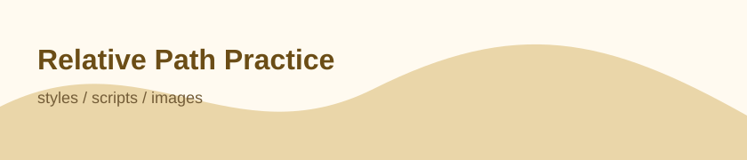

web03
画像・CSS・JavaScriptのファイルパス
HTMLから見た相対パスで、CSS、JavaScript、画像を読み込みます。

トップページ
styles/style.css、scripts/main.js、images/avatar.svg を参照しています。
web03
HTMLから見た相対パスで、CSS、JavaScript、画像を読み込みます。

styles/style.css、scripts/main.js、images/avatar.svg を参照しています。